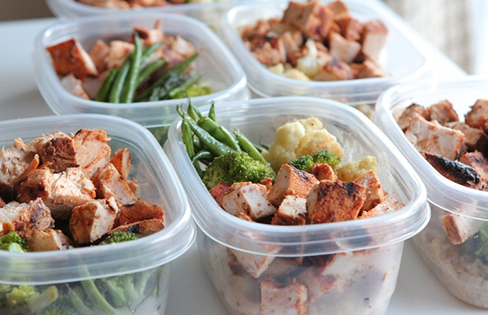

Lifestyle & Mental Health
- Prepare meals on the weekends so that you can save yourself time through the week. 
- Work on your relationships and friendships. Having strong social support prevents depression and has been linked to warding off diseases.
- Learn how to meditate and do it regularly! Meditation is good for mental and physical health and can help treat anxiety-related disorders.
- If you don't already have a "flow activity," find one and participate in it regularly.
- Writing in a journal has been proven to help people relieve stress and to let out pent-up emotions.
- Many people swear by writing down things you are grateful for everyday to make yourself feel better and more grounded.